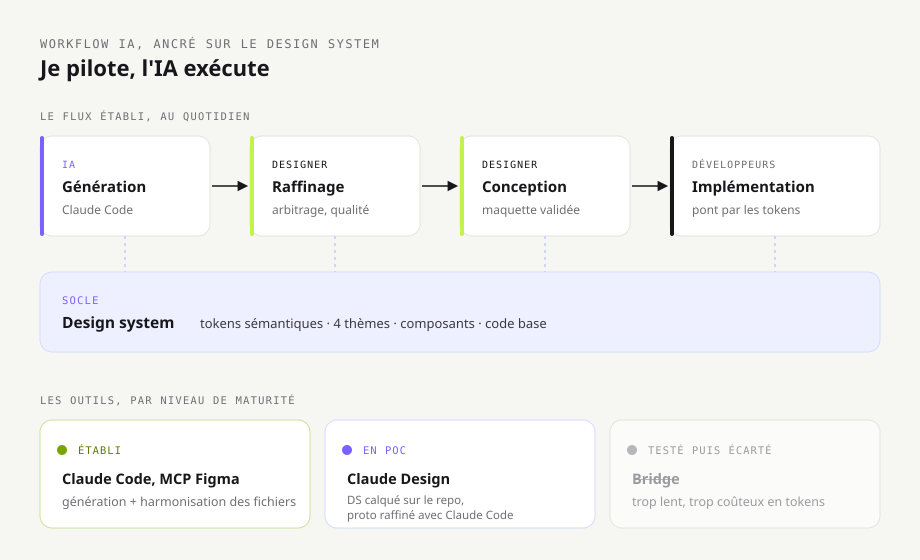
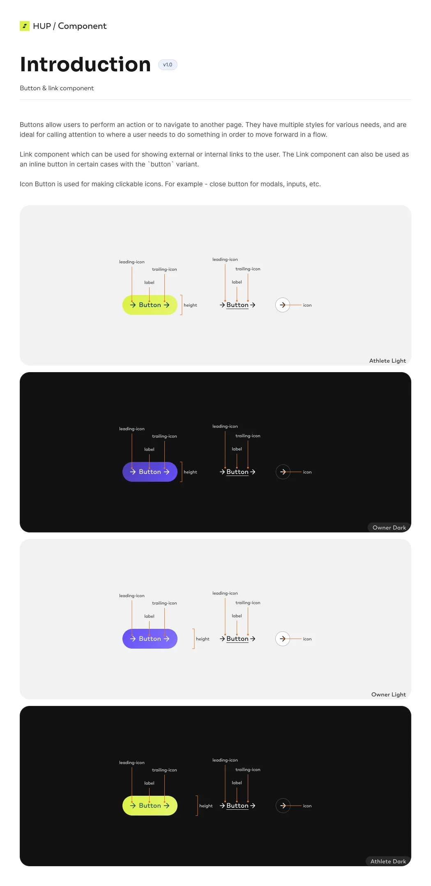
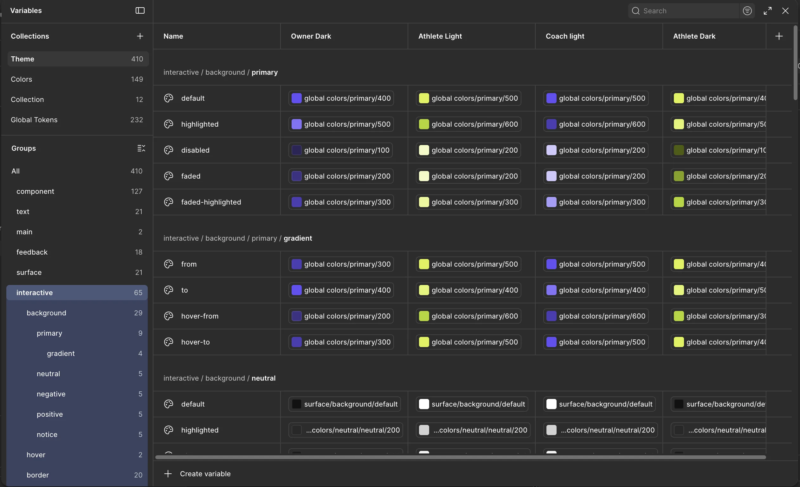
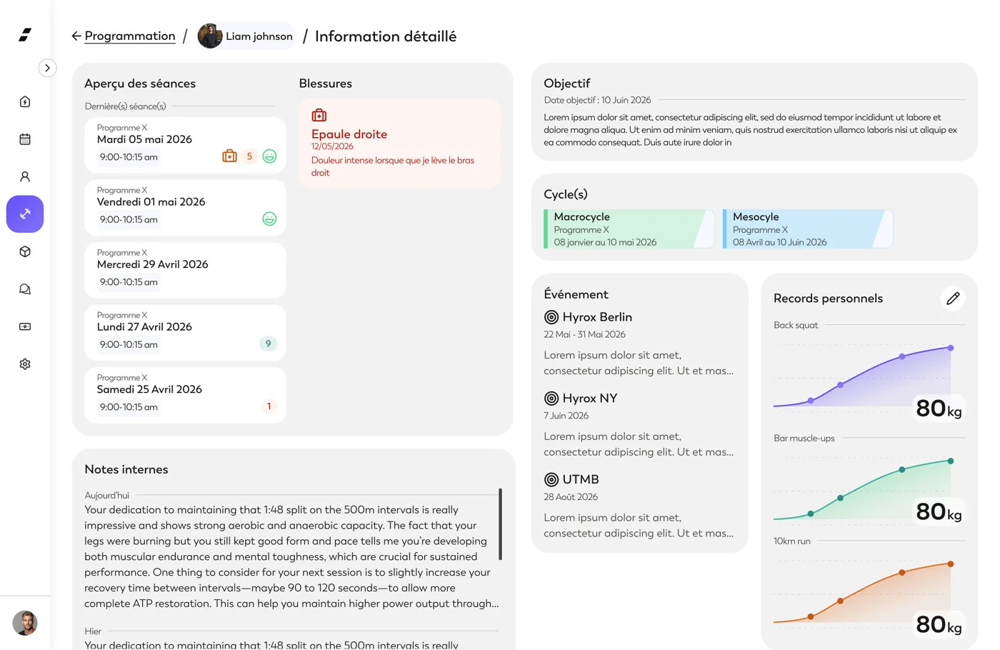
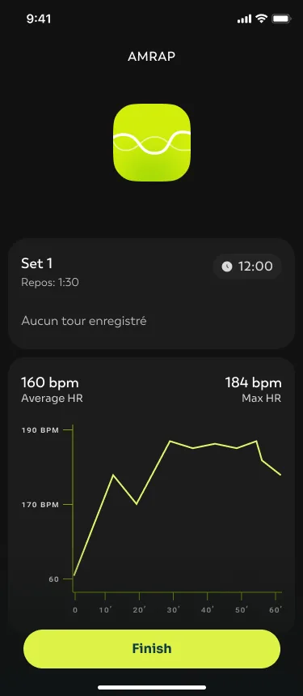
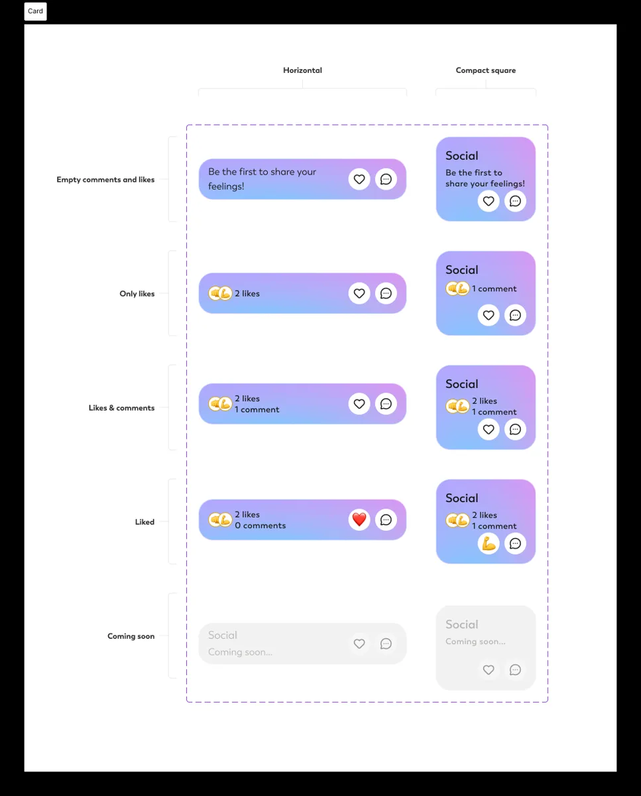
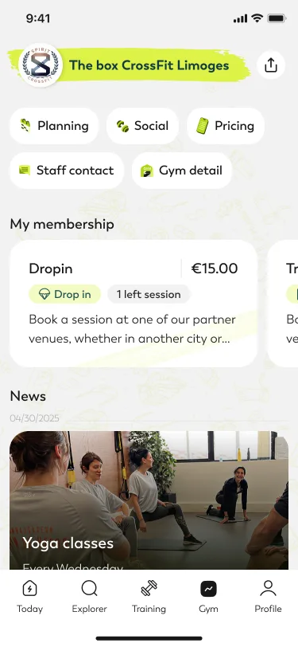
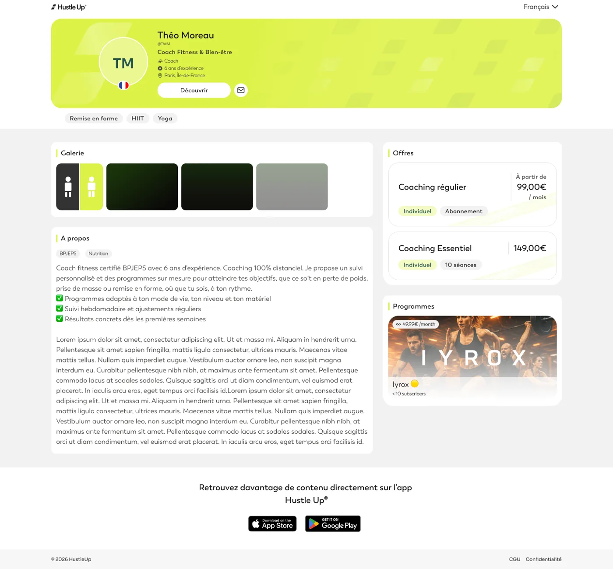
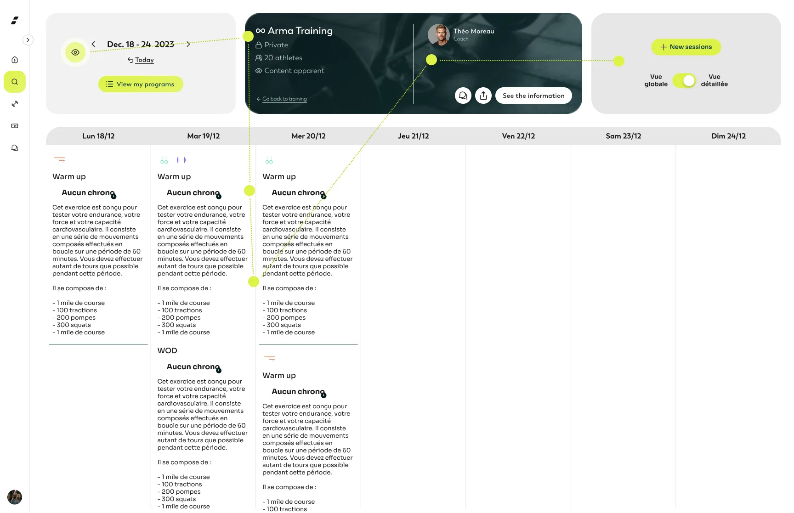
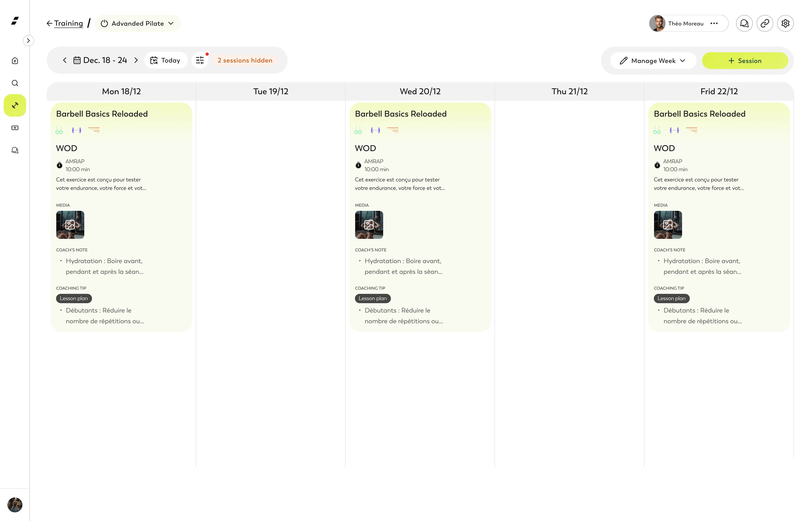

Hustle Up
Une plateforme sport & bien-être pour trois publics (athlète, coach, owner). Quatre décisions de conception, chacune racontée par l'arbitrage qui l'a façonnée.
Concevoir avec l'IA
Greffer un workflow de génération de maquettes sur le design system, sans lâcher la main.
Un workflow où l'IA génère des maquettes ancrées sur le design system existant (tokens + composants réels), pas "à vide". Résultat : production accélérée sans perte de cohérence, le designer garde l'arbitrage à chaque étape.

WORKFLOW IA ANCRÉ SUR LE DSLe workflow : un flux établi ancré sur le design system, et les outils par niveau de maturité.
Une fois le design system en place, restait la production. Le maquettage classique, écran par écran, est lent dès qu'un produit a plusieurs publics (athlète, coach, owner) et plusieurs thèmes à décliner. À l'inverse, demander à une IA de générer une interface « à vide » produit du générique : des écrans plausibles mais hors-système, qui ignorent les composants et les tokens. Aucune des deux ne donnait à la fois vitesse et cohérence.
J'ai construit un workflow où l'IA ne part jamais de zéro : elle génère en s'appuyant sur le design system et sur la code base du produit.
- Le DS comme point d'ancrage : organisé en tokens sémantiques par thème, il fait produire des écrans réellement ancrés dans le système, pas des approximations à reprendre.
- Un process raffiné avec Claude Code, fidèle aux composants et tokens réels. L'IA propose, je raffine en designer, la maquette part en conception ; l'implémentation reste aux développeurs.
- L'entretien des fichiers Figma automatisé via le MCP Figma piloté par des scripts générés avec Claude : une tâche répétitive devient rapide et homogène.
- La main à chaque étape : je définis l'intention et les contraintes, l'IA accélère, je garde l'arbitrage et le contrôle qualité.
Je teste de générer des interfaces avec Claude Design, en y intégrant le design system calqué sur le repo pour s'appuyer sur les vrais composants. L'objectif reste constant (ne jamais générer hors-système), mais l'outillage évolue. Je le présente comme une exploration en cours, pas un acquis : distinguer l'établi de ce que je teste fait partie de ma façon de travailler.
Ancrer la génération sur le design system plutôt que de prompter à vide
Le réflexe courant, c'est de décrire un écran à l'IA et d'espérer un bon résultat. Le souci : il est déconnecté du système, il faut tout reprendre, et le gain de vitesse disparaît. J'ai fait le choix inverse : m'appuyer sur le DS déjà construit pour que l'IA génère dedans, pas à côté. Ce n'est possible que parce que le socle existait et était structuré en profondeur.
Le second parti pris, c'est la place du designer. L'IA n'est pas un substitut, c'est un exécutant rapide : le jugement (qu'est-ce qui est juste pour l'utilisateur, qu'est-ce qu'on garde) reste côté designer.
Bridge, évalué puis abandonné
J'ai évalué Bridge pour générer directement dans Figma. Après l'avoir mis à l'épreuve, je l'ai écarté : production et itération trop lentes, consommation de tokens trop élevée au regard du gain. Tester un outil et décider de ne pas le garder fait partie du travail.
Le workflow accélère la production tout en préservant l'intention design et la cohérence avec le système. Un process réel, pas une démo : ancré sur un DS de production et exploité au quotidien. La frontière reste nette : je conçois et génère des maquettes ancrées sur le système, l'implémentation revient aux développeurs.
Design system Hustle Up
Mettre en système un existant disparate pour tenir trois publics et plusieurs thèmes, sans le dupliquer.
Architecture de tokens sémantiques sur 4 thèmes (Athlete Light/Dark, Owner, Coach). Un composant ne référence jamais une couleur, seulement un rôle. Le même bouton change d'apparence selon le contexte sans duplication. Intégré avec les devs via Storybook.

UN COMPOSANT · 4 THÈMESAnatomie d'un composant, déclinée sur les quatre thèmes.
Hustle Up s'adresse à trois publics (athlètes, owners, coachs), chacun avec son thème et son accent, en web comme en mobile, clair comme sombre. Le point de départ n'était pas une page blanche : des composants existaient, mais disparates, sans tokens, avec une gestion des couleurs incomplète. Le vrai enjeu : faire tenir une seule base sous tous ces contextes sans la dupliquer, en repartant d'un existant inégal.
- Une architecture de tokens là où il n'y en avait aucun : couleurs globales à la base, puis une couche sémantique (interactive, surface, feedback) qui décrit l'intention, pas la valeur.
- Repris les composants existants pour lever les disparités et compléter la gestion des couleurs, de sorte que tout se range derrière les mêmes tokens.
- Décliné sur quatre thèmes (Athlete Light, Athlete Dark, Owner, Coach) : le même token pointe vers une valeur différente selon le thème, sans toucher au composant.
- Documenté dans Storybook et intégré avec les devs via un système de tokens commun design ↔ code : pas de traduction manuelle, pas d'écart entre maquette et produit.

Une couche sémantique de tokens plutôt que des couleurs directes
Le choix simple aurait été d'attribuer des couleurs directement aux composants, thème par thème. Ça marche au début, et ça devient ingérable dès qu'on ajoute un public ou un mode sombre. J'ai inséré une couche sémantique entre les couleurs globales et les composants : un bouton ne dit pas « je suis violet », il dit « j'utilise la couleur interactive primaire », et c'est le thème qui décide.
Ce niveau d'indirection coûte plus de travail en amont, mais c'est exactement ce qui rend le système multi-public tenable, et ce qui a rendu possible le branchement d'un workflow assisté par IA.

Suivi individuel coach
Objectifs, cycles, blessures, événements et records avec leur progression.

Chrono & suivi BPM
Suivi de fréquence cardiaque dans l'app chrono, courbe et moyennes.

Espace social
Échange autour d'une séance, cartes déclinées sur tous leurs états.

Section box CrossFit
Vue athlète : infos, réservation de créneaux, contact coachs, boutique.

Vitrine coach
Mise en avant des coachs pour vendre formations et suivi.
Hustle Up dispose d'un design system qui tient ses trois publics et ses thèmes sur une seule base, où ajouter un univers ne casse pas les composants. Surtout, il vit jusque dans le produit grâce aux tokens communs design ↔ code et à l'intégration menée avec les devs sur Storybook. Et c'est ce même socle qui a permis ensuite de greffer le workflow assisté par IA.
Redesign du header de programmation
Remettre la lecture d'une page dense dans le bon sens.
Le header de programmation avait le titre au centre, une zone contrastée qui court-circuitait le regard, et deux contrôles de visualisation dispersés. Repris en partant du parcours de l'œil, devenu un pattern réutilisé sur les vues coach.

PARCOURS DE L'ŒILL'ancien header : happé par la zone contrastée du centre, le regard zigzague au lieu de suivre la lecture.
Le header de la vue de programmation accumulait trop d'éléments, et sa structure gênait la lecture. Trois problèmes se cumulaient :
- Le regard parcourt la page de gauche à droite, or le titre du programme était relégué au centre, perdu au milieu plutôt qu'en tête.
- Une zone à fort contraste en plein milieu court-circuitait la lecture naturelle.
- Deux endroits servaient à changer la visualisation : la date à gauche, la densité à droite via un switch, un composant peu cohérent pour basculer entre deux modes.
Plutôt que de réarranger l'existant à la marge, j'ai repris le header en partant du parcours de l'œil : le titre revient en tête, la zone à fort contraste est apaisée, et le contrôle de la visualisation est rendu cohérent au lieu d'être dispersé entre une date et un switch.

Faire suivre au header le sens de lecture de la page
Sur une page dense, un header n'est pas une barre d'outils à remplir, c'est ce qui donne le point d'entrée du regard. Le titre du programme revient là où l'œil se pose d'abord, la zone contrastée cesse d'interrompre la lecture, et choisir comment on voit la semaine devient une seule logique au lieu de deux. Il doit suivre le sens de lecture, pas le contrarier.
Le header guide désormais la lecture au lieu de la freiner. La cohérence gagnée en a fait une base réutilisable : il a été repris tel quel sur les nouvelles vues de planification des coachs, évitant de réinventer un en-tête à chaque vue.
Dashboard gym owner
Centraliser le pilotage quotidien d'une salle, avec des accès adaptés à chaque rôle.
Interviews owners → vue de pilotage unique répondant à "où dois-je agir aujourd'hui ?" Chaque bloc = une porte d'entrée vers le détail, pas le détail lui-même. Finance segmentée par rôle. Besoin confirmé en entretien de restitution (importance perçue : 5/5) ; un widget non utilisé retiré post-launch.
 DASHBOARD OWNER
DASHBOARD OWNER
La vue de pilotage de l'owner, dense mais lisible.
Après des interviews d'owners, un constat : pour piloter leur salle au quotidien, il leur faut des informations centralisées qu'ils n'avaient pas, ou seulement distillées dans plusieurs endroits du produit : présences, remplissage des cours, engagement, et l'aspect financier. Le problème n'était pas un manque de données, mais leur dispersion. Aucun endroit ne répondait à la question du matin : ma salle tourne-t-elle bien aujourd'hui, et où dois-je agir ?
- Identifié en interview les informations qui comptent pour le suivi quotidien et regroupé le besoin sur une seule vue : drop-in du jour, sessions d'essai, cours qui se remplissent, engagement, et une section KPI.
- Centralisé en colonnes thématiques sur le thème owner. Chaque bloc est une synthèse, une tendance, un chiffre clé, pas un tableau exhaustif.
- Tenu compte des rôles dès la conception : la finance (à gauche) relève du rôle financial ; les infos athlètes restent accessibles au coach, sans droit de regard sur la finance.
- Réutilisé le modèle de tableau unifié du DS pour les pages de détail (finances, planning, membres) : filtres, recherche, export. Le dashboard y renvoie quand l'owner veut creuser.
Une vue de pilotage, pas un tableau de bord exhaustif
La tentation, sur un dashboard, c'est de tout mettre (chaque athlète, chaque transaction) parce que tout existe déjà. J'ai tranché dans l'autre sens : le dashboard ne montre que ce qui aide à décider. Chaque bloc est une porte d'entrée vers un détail, pas le détail lui-même : on voit le churn et les quelques athlètes à relancer, un lien mène à la liste complète.
Sur une interface de pilotage, la valeur n'est pas dans la quantité affichée mais dans la décision qu'elle déclenche. Le détail doit rester à un clic, pas sous les yeux.
Des accès adaptés au rôle
Une même salle, plusieurs droits de regard. Plutôt que de multiplier les écrans, la même vue se module selon le rôle : le financial retrouve la même structure avec les blocs financiers en moins, réagencés pour rester lisibles. Chacun voit ce qui le concerne, l'information sensible reste cadrée par les droits.
L'owner dispose d'une vue unique qui centralise un suivi jusque-là dispersé et répond à « où dois-je agir aujourd'hui ? ». En entretien de restitution sur le prototype, un owner de box CrossFit a confirmé un besoin préexistant et noté son importance 5/5 ; sa description spontanée du dashboard idéal (séances d'essai à relancer, prospection, financier, planning) recoupe bloc pour bloc ce que la vue affiche, et il a jugé la qualité perçue au-dessus de son outil du quotidien. Le même entretien a aussi pointé ce qui ne servait pas la décision : un bloc d'accueil jugé trop grand (« la date, je l'ai déjà sur mon ordi »), le genre de retour direct dont se nourrissent les itérations.
Un arbitrage de suivi dit la méthode : une feature de prise de notes, appréciée sur prototype mais peu utilisée en réel, n'a pas été maintenue : la garder aurait alourdi la vue sans servir la décision.